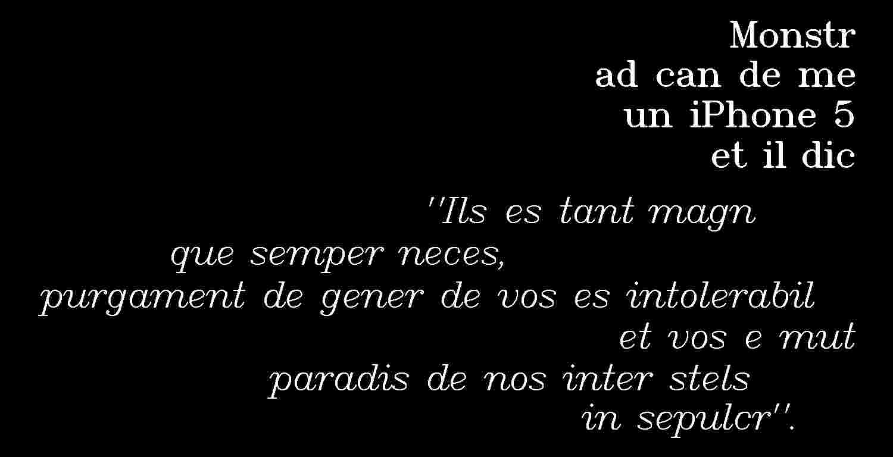
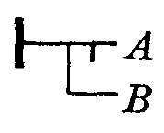
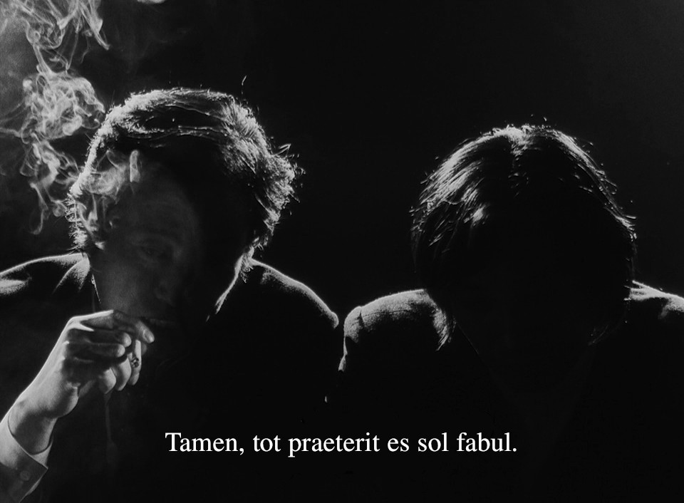
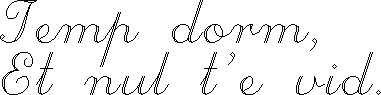

Latin sin Flexion is an auxiliary language.
The language, originally created by Giuseppe Peano, is an attempt to strip Classical Latin down to its simplest possible grammar while keeping its vocabulary recognizable, making a language learnable in hours rather than years. This page documents a specific variant that favors compactness by removing unstressed final vowels and repeated consonants.

Hoc mund mirand que nos habit es plus mirabil quam comod, plus pulcr quam util, es pro admirat et gaud quam us.
Pronunciation
Latin sin Flexion(Lø) favors the old Latin pronunciation, consonants are sounded as in English with the exception of c that is always sounded like k, as in can and cat. Vowels are pronounced as indicated below:
- a, as in father.
- e, as in they.
- i, as in machine.
- o, as in tone.
- u, as in rule.
- y, as French u.
- j, as y in yes.
- ae, as i in aisle.
- oe, as oi in boil.
Syntax
The order of words is so nearly similar to the English order of words that one may safely follow that usage without fear of being misunderstood or being too greatly incorrect. Most grammatical elements are not necessary, declension and conjugation are eliminated.
Leon dorm in umbr.
The lion sleeps in the shade.
The subject tends to come first, the predicate last. The word most expressive of the thought uppermost in mind will likely come first and the others follow in their natural sequence. Lø sentences adheres to a rigid Subject Verb Object structure, and questions, Verb Subject Object.
E dorm il in umbr?
Did he sleep in the shade?
Nouns
Any Latin dictionary gives two forms for each noun, the first form is called nominative, the second genitive. Lø nouns are typically taken from the Latin genitive form, and keeping only the root word:
| Latin | Lø | English | |
|---|---|---|---|
| Nominative | Genitive | -- | -- |
| rosa | rosae | ros | rose |
| casus | casus | cas | case |
| pax | pacis | pac | peace |
| laurus | lauri | laur | laurel |
| tempus | temporis | tempor | time |
There is no grammatical or artificial gender. Natural gender is indicated by different names if these are in international use, like patr(father) or matr(mother). If different names do not exist, gender is indicated like can mas(male dog), can femin(female dog).
Nos hab un ling et du aur.
We have one tongue and two ears.
There are no cases. The English genitive is made with de, as in ped de homin(the man's foot). Plural can be marked, but it is omitted when not necessary: fils(sons), tres fil(three sons) or plur fil(multiple sons).
Articles
There is no definite or indefinite article. When the ending vowel of an article and starting vowel of the next word is the same, the article can be contracted, like te es(you are) to t'es and da ad(give to) to d'ad. When it has the value of a pronoun and its use is necessary, it is translated with a pronoun, like il or un. :

- D'ad me librs, give me books.
- D'ad me libr, give me a book.
- D'ad me hoc libr, give me the book.
- D'ad me il libr, give me that book.
- D'ad me ils libr, give me these books.
Pronouns
Possessive pronouns are simply: de me(my, mine), de nos(our, ours), etc.. Reflexive pronouns are made of se(myself, himself, herself, itself..) and de se(of one's self). Capitals can sometime mark personification or proper-noun status, ordinary nouns stay lowercase even in elevated prose.
| me | I, me | |
|---|---|---|
| te | thou, thee | |
| il | he, she, him, her | that |
| nos | we, us | |
| vos | you | |
| ils | they, them | those |
| id | it |
Adjectives
Adjectives may be formed by means of de, like de fratr(fraternal). Adverbs from adjectives are obtained by means of in mod(in a way of), like in mod fratern(fraternally). For the comparison of adjectives, superlatives are used like: plus(plus), magis(more), mult(much), maxim(most)..
- Brev, short.
- Maxim brev, shortest.
- Magis brev, shorter than.
- Tam brev quam, as short as.
- Minus brev quam, less short than.
The prefixing of the negative ne or non may ordinarily be used to denote the contrary. The preposition sin may be used to denote lacking, like the suffix "-less" in English.
Verbs
The Latin vocabulary gives the present indicative and the present infinitive. By dropping the ending of the infinitive -re, the Lø form is obtained. The form of the imperative is the same as the one for the present. Sometimes the idea of the past is indicated by a word of the sentence and in such case there is no need to inflect the verb.
Her me scrib, Lunad nos vol leg.
Yesterday I wrote, Monday we will read.
When it is necessary to indicate the past, this can be done by an adverb as jam(already), tum(then) which is particularly used for this purpose or by e(have) preceding the verb like quotes and headings.
- Nos e am, we have loved.
- Me jam am, I loved.
- Te tum am, you loved.
When it is necessary to indicate the future, it can be done by the adverbs vol(will) and deb(must) like in English, or by i(shall) preceding the verb.
- Nos i am, we shall love.
- Me vol am, I will love.
- Te deb am, you must love.
The potential form is indicated by pot, like pot exprim(can express). The subjunctive has no special ending, its idea is expressed by the use of conjunctions like si, que, quod.
Ils vol que te reven ad dom.
They want you to return home.
The passive form is done by the past participle and the verb "es", to be: es scrib(is written). It may also be rendered by "qui" and a relative clause: fil es qui matr am(it is the son whom the mother loves).

Examples
Quaesits vol saep incip per un quaesitvocabul, un facvocabul et in fin, un pronomin. Hoc es aliq vulgar dicants:
| Saluts | |
|---|---|
| Good morning, good evening! | Bon auror, bon vesper! |
| Hello! Pleased to meet you. | Heus! Content de inven te. |
| Happy Birthday! I miss you. | Felic Natalit! Te defic ad me. |
| Introductions | |
| How are you? I'm doing well. | Quomod es te? Es bon. |
| What's your name? My name is .. | Qu'es nomin de te? .. es nomin de me. |
| Where are you from? I'm from .. | Ubi es de? Es de .. |
| Can you speak more slowly? Thanks | Pot te loq plus lent? Gratias |
| Sorry, say that again | Prec, dic ce de nov |
| Yes, no, maybe. No way! | Cert, non, forsan. Nul mod! |
| Misc | |
| How much is this? A hundred. | Quant es? Centum. |
| Do you come here often? Sometimes. | Ven te hic saep? Aliquand. |
| Where's the bathroom? It's far. | Ubi es baln? Es distant. |
| Help! Fire! They will pay for everything. | Auxil! Pyr! Ils vol merc pro omn. |
| When are you going? Next week. | Quand vad te? Juxt septiman. |
Nos vid per oculs, audi per aurs, senti odor per nas, gust per ling, loq per or, tang per man, ambul per pede. Me hab un capit, du man, du ped. Man hab quinq digit. Du man hab decem digit.
Alphabet latin hab duo decem et quinq liter. Prim liter es A, secund B, C es ant D, F es post E. H es inter G et I, Z es ultim. Y es ant ultim. O es in loc 15. T hab numer 20 ab principi, et numer 6 ab fin.
Aq es in fluv et in mar. Aer es super ter, aer in mot es vent. Cael es super ter, ter es sub cael. Sol da luc et calor ad ter. Sol ori in orient, et fi die. Sol cad in ocident et fi noct. Lun et stelas splend in noct. In noct nos dorm.
Fulgid astr, que cum suo viv luc alb atrah atention d'omn homin, es Jov(Jupiter), gigant de munds. Hoc mund colosal gravit lent circ Sol et percur suo orbit quas rotund in 11 an et 314 die. Galileo in 7 januar 1610 deteg quatuor satelit ad Jov. Quatuor al satelit es detect post 1892, invisibil cum instruments comun.
| English | French | Sin Flexion |
|---|---|---|
| I showed my dog my iphone 5 and she said: |
Je montrai à mon chien un iPhone 5 et elle dit: |
Monstr ad can de me un iPhone 5 et il dic: |
| "this is as large as a phone ever needed to be, | "C'est est aussi large qu'un téléphone n'eu jamais à être, | "hoc es tam magn quam semper neces, |
| your kind's waste is intolerable and you have turned our paradise amongst the stars into a tomb". | le gaspillage de votre espèce est intolérable et vous avez transformé notre paradis parmis les étoies en tombeau". | purgament de gener de vos es intolerabil et vos e mut paradis de nos inter stels in sepulcr". |
Traductor & Dictionar
Un colection de vocabuls pro incip cum Lø, aper in nov fenestr.
Indefinit Pronomins
- tal, such.
- qual, such as.
- omn, all, every.
- ul, some, any.
- nul, not any.
- nemin, nobody.
- al, other, else.
- sol, alone, single, one.
- tot, whole, all, entire.
- neutr, neither.
- alter, either(one).
- utroq, either(both).
- aliq, some.
- alioq, otherwise.
- aliquid, somewhat.
- aliquand, sometime.
- aliquant, some amount.
Adverbs
- ben, well
- cert, certainly
- erg, therefore
- it, thus
- mal, badly
- mult, much
- nam, because, for
- nimis, too much
- non, no, not
- quam, as, than
- quas, almost, nearly
- quia, because
- satis, enough
- sic, so, thus
- tal, like, such
- tot, entirely, wholly
- tut, safely
- usqu, till, up to
- vald, greatly, very, very much
Adverbs(Tempor)
- jam, already
- iterum, again
- in fin, at last
- hod, today
- ant, before
- bis, again
- cras, tomorrow
- her, yesterday
- interim, meanwhile
- nunc, now
- post, after
- nuper, lately, recently
- saep, often
- semper, always
- subit, at once, immediately
- tunc, then
- prim, at first
Adverbs(Loc)
- ub, where
- alib, elsewhere
- hic, here
- ib, there
- dexter, to the right
- sinistr, to the left
Prepositions
- ab, by, from
- ad, at, to
- advers, against
- apud, near
- circ, about
- circum, around
- cum, with, when, whereas, since
- de, concerning, from of
- ex, from, out of
- extr, outside, without
- in, in, into
- infr, below, under
- inter, among, between
- intr, within
- juxt, near, next to
- ob, on account of
- per, by means of, through
- prae, before, in front of
- pro, for, on behalf of
- sin, without
- sub, below, under
- super, above, on, upon
- trans, across, beyond
- ultr, beyond
Conjunctions
aut ... aut = either ... or(exclusive). et ... et = both ... and . neq ... nec = neither ... nor. minus ... quam = less ... than. plus ... quam = more ... than. tant ... quant = as much ... as. qual ... it = as ... so. vel ... vel = either ... or(indifferent).
- aut, or
- dum, during, until, when, while
- et, and
- etiam, also, even
- ets, although, even if
- ne, no, not
- nec, nor
- nis, unless
- sed, but
- si non, if not
- tamen, however, nevertheless, yet
Numers
- un, prim, 1
- du, secund, dimid, 2, 1/2
- tres, tert, un tert, 3, 1/3
- quatuor, quart, un quart, 4, 1/4
- quinq, quint, 5
- sex, sext, 6
- septem, septim, 7
- oct, octav, 8
- novem, non, 9
- decem, decim, 10
- decem un, decimprim, 11
- decem du, decimsecund, 12
- decem tres, decimtert, 13
- vigint, vigesim, 20
- vigint un, 21
- trigint, trigesim, 30
- quadragint, quadragesim, 40
- quinquagint, quinquagesim, 50
- sexagint, sexagesim, 60
- septuagint, septuagesim, 70
- ocogint, octogesim, 80
- nonagint, nonagesim, 90
- centum, centesimo, 100
- du cent, 200
- mil, milesim, 1 000
- milion, milionesim, 1 000 000
Dies de septiman, per exampl Lunad, es Luna Die ab Latin que e mut ad Lunadie, ex vocal in fin(ie) et praeb Lunad.
- Lunad, Monday
- Marted, Tuesday
- Mercuriod, Wednesday
- Joved, Thursday
- Venered, Friday
- Saturnod, Saturday
- Sold, Sunday

- Sin-Flexion/Anglo Dictionar
- Prim Libr, Latino Sine Flexione
- Anglo/Sine-Flexione Dictionary, Latino Sine Flexione
- Latin/Anglo Dictionary, Latin
Sentents de Latin Sin Flexion
Compar vocabuls inter divers auxlings de Latin, hoc Lø es sol ling qui es ver sin flexion:
| Latin | Pater noster, qui es in caelis, sanctificetur nomen tuum. |
|---|---|
| Sin Flexion | Patr de nos, qui es in cael, que nomin de te fi sanctificat. | Peano's LsF | Nostro patre, qui es in caelos, que tuo nomine fi sanctificato. | Interlingua | Patre nostre, qui es in le celos, que tu nomine sia sanctificate. | Occidental | Patre nor, qui es in li cieles, mey tui nómine esser sanctificat. | Idiom Neutral | Nostre patro, qui es in cieli, sanctifikato siu tue nomine. | Ido | Patro nia, qua esas en la cieli, tua nomo sanctigesez. |
D'ad nos tea de silic de omni die.

Sons Idem
Primo quaesit de omn, hoc regul cum vowel de fin et pugnant de sons idem, utro es un problem aut non. Hoc tres mod, omn cum un solut:
- Vag mod, nomin, adjectiv aut verb fi diversont mod. Exampl: sicca(to dry)/sicco(dried) fi sic. Hoc es stabil cum auxvocabul, inspic in Anglic: cook[n], to cook[v].
- Par sentent, sed divers vocabul. Exampl: disseminate[v] et seeding[v], ils es utroq sem.
- Sin solut, stabil per retin sons idem de ils, aut altervocabul. Exampl: Talo(heel)/tale(such) heel vol fi ped post.
Respons es camb de hoc vocabuls in dictionar:
- sed(however/seat), sedil -> seat.
- ut(as/use), qual -> as.
- mens(meal/month), cib -> meal.
- sal(salt/jump), surg -> jump.
- gen(cheek/knee), gnath -> cheek.
- man(morning/hand), auror -> morning.
- pac(pay/pack), fasc -> pack and merc -> pay.
- pan (bread/cloth), tex -> cloth.
- sit (thirst/located), posit -> located.
- sum (assume/summit), vertic -> summit.
- vic (occasion/lane), via -> lane.
- vac (cow/empty), bov -> cow.
- mut(change/dumb), plumb -> dumb.
- tal (such/heel), ped post -> heel.